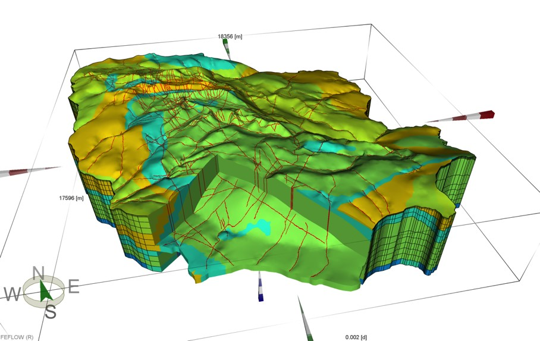
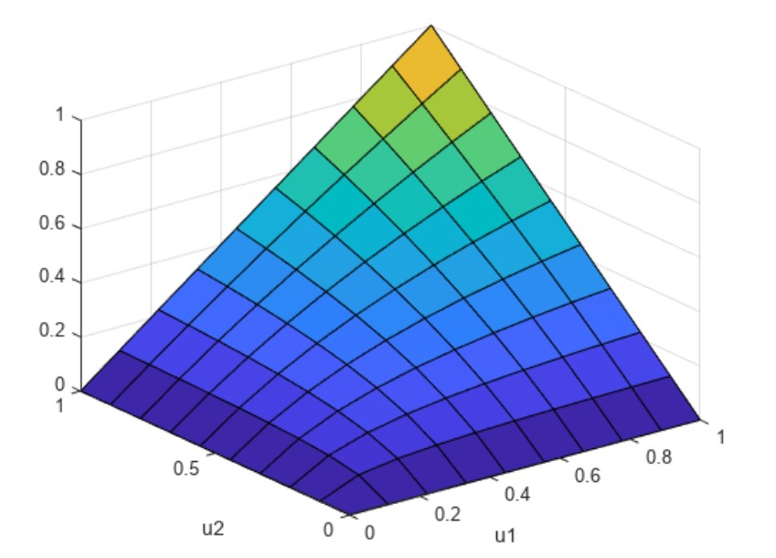
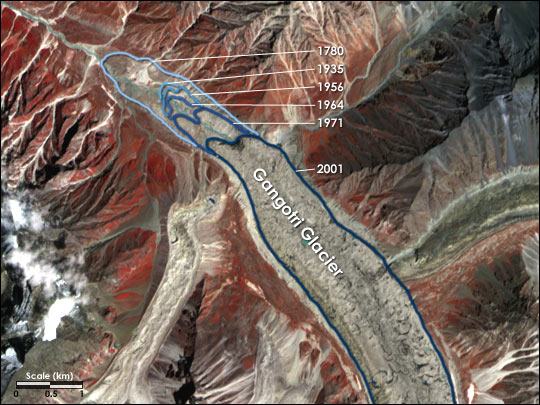
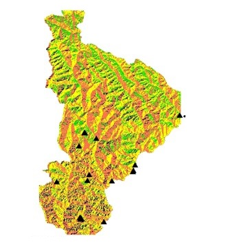

Ongoing
This project aims to assess the impact of climate and land use changes on future groundwater resources using advanced deep learning models. By integrating GPS and GRACE data, the study enhances spatiotemporal resolution through joint inversion and integrated hydrological modeling. The deep learning approach allows for the analysis of complex interactions between climatic variables, land use patterns, and groundwater dynamics.

This project aims to develop comprehensive water management strategies for the Ganga Basin by leveraging the Water Accounting Plus (WA+) framework. By integrating hydrological data, remote sensing, and GIS, the study provides detailed insights into water availability, usage, and distribution within the basin. The analysis focuses on identifying key areas of water stress, evaluating the impact of climate change, and proposing sustainable management practices.

This project aims to assess extreme hydro-meteorological events by employing copula-based statistical methods to analyze the relationships between key variables such as precipitation and evapotranspiration, Standardized Precipitation Index (SPI) and Standardized Precipitation Evapotranspiration Index (SPEI), and SPI and Groundwater Drought Index (GDI). By integrating these variables, the study seeks to understand the joint behavior and dependencies among them, providing a comprehensive view of drought and flood conditions.

This project focuses on analyzing the Normalized Difference Snow Index (NDSI) trends of the Gangotri Glacier over a 25-year period, from 1995 to 2020. Utilizing remote sensing data and geographical information systems (GIS), the study examines changes in snow cover and their correlation with climatic variables. The primary goal is to understand the impact of climate change on the glacier’s snow dynamics. The findings provide valuable insights into the glacier’s health in the region.

This project aims to assess landslide susceptibility in the Pithoragarh District of Uttarakhand using ArcGIS. By integrating various geospatial data layers such as topography, soil type, land use, and rainfall patterns, the study identifies areas prone to landslides. The analysis employs statistical and spatial modeling techniques to generate a landslide susceptibility map, which can be used for risk assessment and mitigation planning.